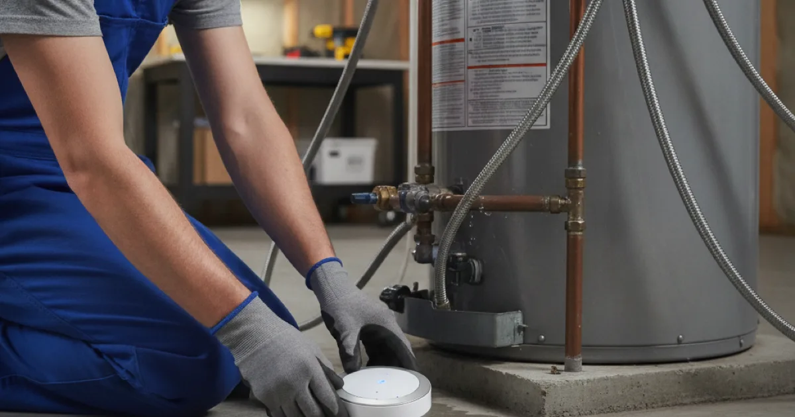

Water Leak Sensor Installation in Westchester County, NY
A small sensor can save you from a big flood. Dan's Drains installs smart water leak sensors that catch leaks early — near water heaters, washers, and in basements — so you know before damage spreads.
- Licensed & Insured
- Same-Day Service Available
- Upfront Pricing
- 15+ Years Local Experience

Need a plumber in Westchester County? We can usually help the same day.
What Leak Sensors Do
A water leak sensor detects moisture where it should not be and alerts you right away — many send a notification to your phone. Some can even shut off the water automatically. It is a small device that prevents a big, expensive surprise.
It is one of the most cost-effective parts of preventing water damage.
Where to Place Sensors
The best spots are wherever a leak would do the most damage or go unnoticed longest:
- Near the water heater.
- Behind or under the washing machine.
- In a finished basement.
- Under sinks and near sump pumps.
We help you pick the spots that matter most for your home.
Talk to a local Westchester County plumber today.
How We Install Sensors
We place the sensors in the right spots, set them up, and confirm they detect and alert as they should. For systems with an automatic shutoff, we connect that to your water supply so it can stop a leak on its own.
We show you how it works so you are confident it has your back.
Leak Risk in Westchester Homes
Finished basements and cold winters make water damage a real risk here. A failed water heater or a burst pipe can flood a basement before anyone notices — unless a sensor catches it first.
The FEMA guidance on water damage underscores the stakes, and sensors are an inexpensive safeguard.
When to Call a Pro
Call us when you want early warning for leaks, especially if you have a finished basement or have been burned by water damage before. We place sensors where they will actually help.
Pair them with a checked sump pump setup for solid basement protection.
Frequently Asked Questions
How do water leak sensors work?
They detect moisture and alert you immediately, often to your phone. Some models can automatically shut off the water to stop a leak before it spreads.
Where should I put leak sensors?
Near water heaters, washing machines, sump pumps, under sinks, and in finished basements — anywhere a leak would cause damage or go unnoticed. We help you choose.
Can a sensor shut off my water automatically?
Some systems can. We can install one that connects to your water supply and shuts it off automatically when a leak is detected.
Are leak sensors worth it?
For the cost, yes. A single caught leak can prevent thousands in water damage, especially in a finished basement.
Do the sensors need special wiring?
Most are wireless and battery-powered, so installation is simple. Systems with automatic shutoff connect to your water line, which we handle.
Ready to book? Reach Dan’s Drains for fast, upfront plumbing help.